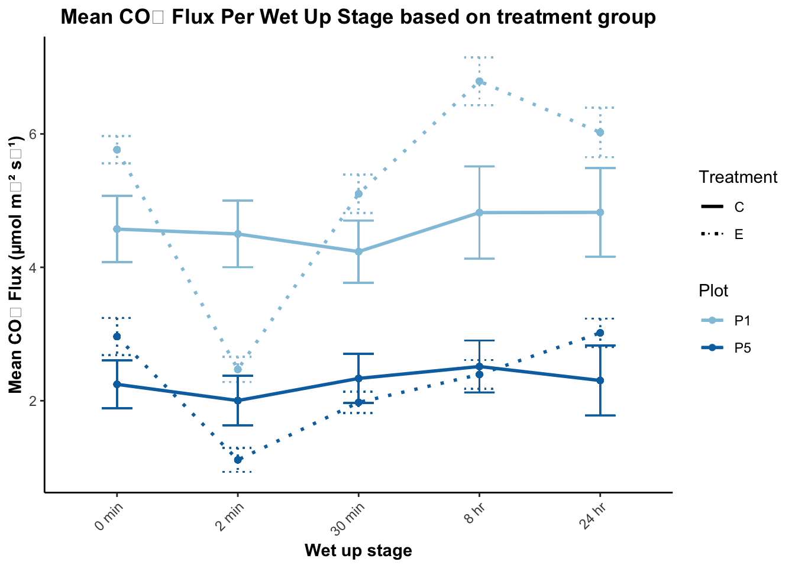
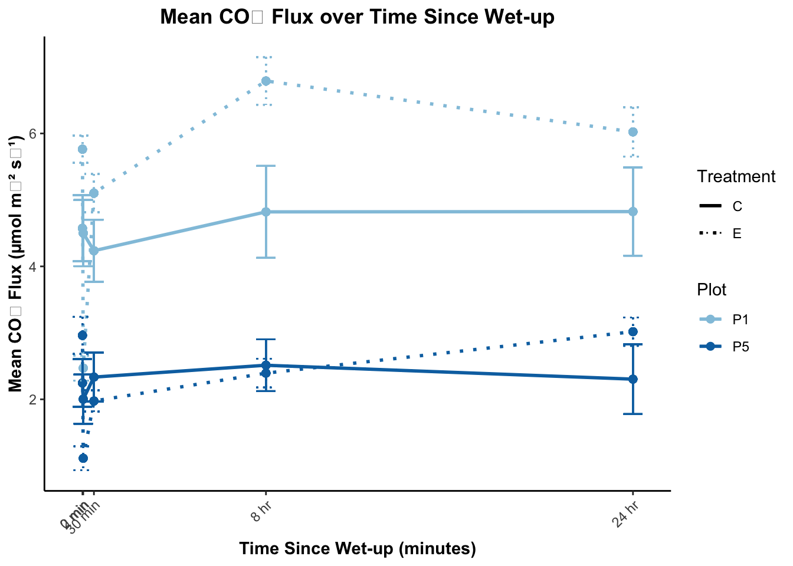
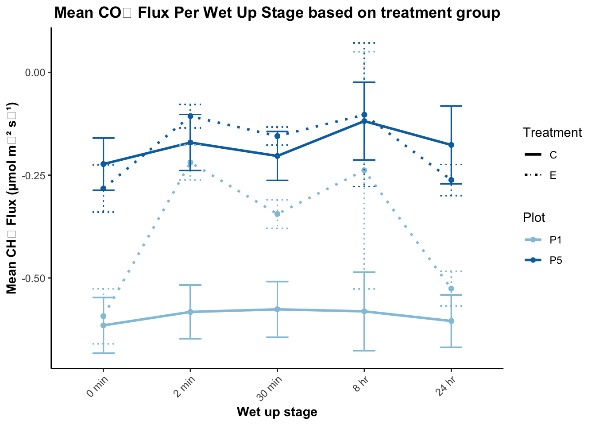
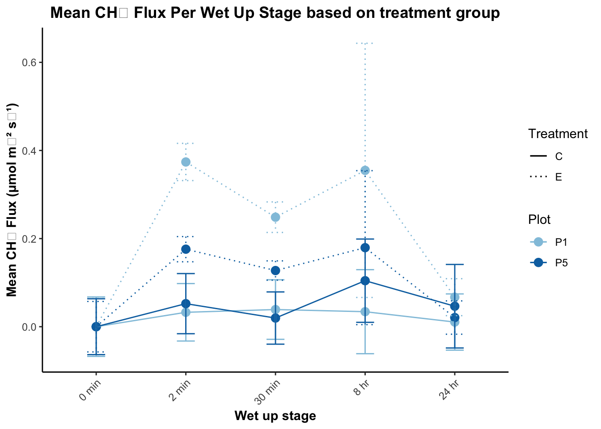
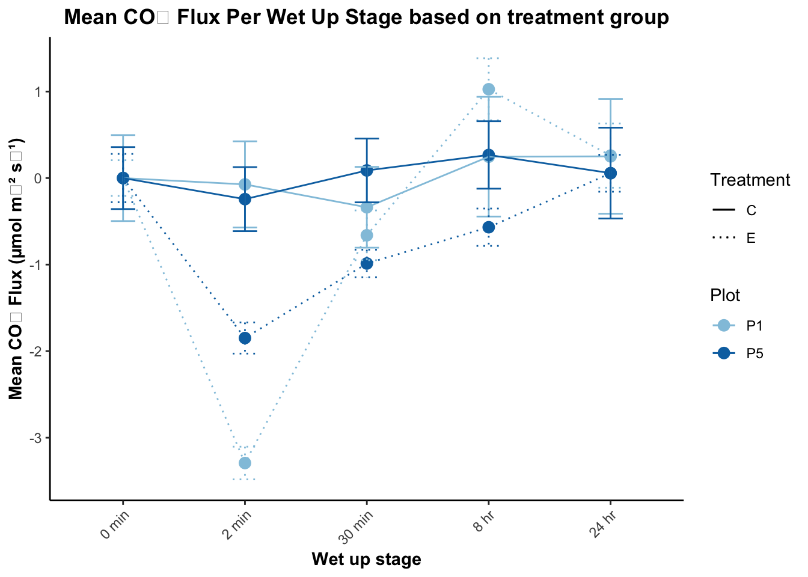
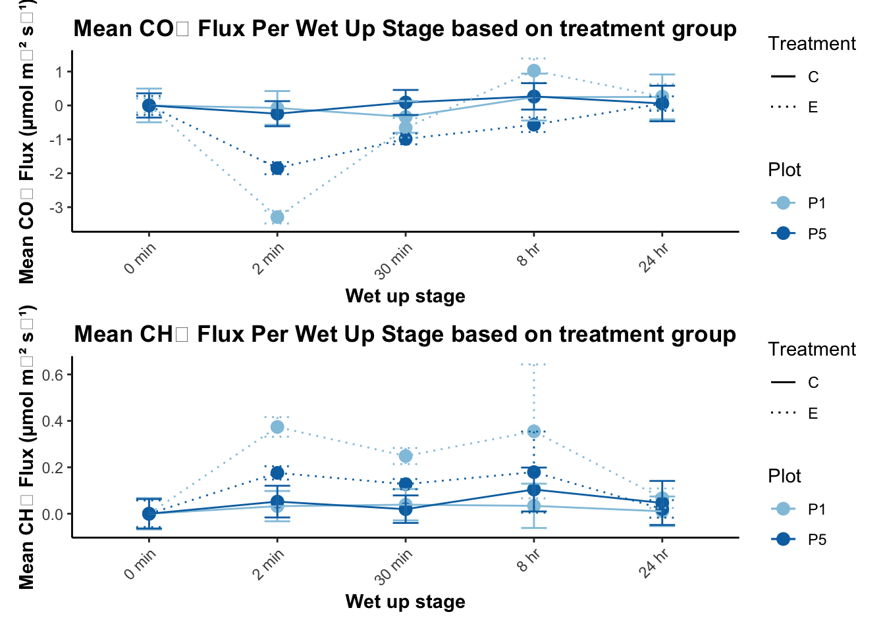
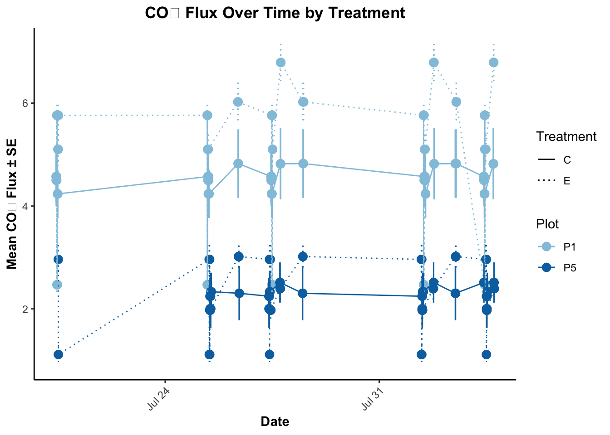

Code
library(tidyverse)
library(forcats)
library(lubridate)
library(plotly)
library(knitr)Nibia Becerra Santillan
April 29, 2025
# A tibble: 6 × 9
`LI-8200...1` `LI-8200...2` CHAMBER...3 `LI-7810...4` `LI-7810...5`
<chr> <chr> <chr> <chr> <chr>
1 2023/07/28 11:47:07 P5C1-5 26.842420 -0.028000 0.385390
2 2023/07/28 11:50:22 P5C2-5 27.249850 0.016820 0.246480
3 2023/07/28 11:53:31 P5C3-5 27.517150 -0.173680 0.975170
4 2023/07/28 11:56:13 P5C4-5 27.654310 -0.608000 0.996050
5 2023/07/28 11:59:15 P5E1-5 27.527430 -0.372980 0.991450
6 2023/07/28 12:02:12 P5E2-5 27.516550 -0.155130 0.949200
# ℹ 4 more variables: `LI-7810...6` <chr>, `LI-7810...7` <chr>,
# CHAMBER...8 <chr>, CHAMBER...9 <chr>tibble [319 × 9] (S3: tbl_df/tbl/data.frame)
$ LI-8200...1: chr [1:319] "2023/07/28 11:47:07" "2023/07/28 11:50:22" "2023/07/28 11:53:31" "2023/07/28 11:56:13" ...
$ LI-8200...2: chr [1:319] "P5C1-5" "P5C2-5" "P5C3-5" "P5C4-5" ...
$ CHAMBER...3: chr [1:319] "26.842420" "27.249850" "27.517150" "27.654310" ...
$ LI-7810...4: chr [1:319] "-0.028000" "0.016820" "-0.173680" "-0.608000" ...
$ LI-7810...5: chr [1:319] "0.385390" "0.246480" "0.975170" "0.996050" ...
$ LI-7810...6: chr [1:319] "-0.136420" "0.582360" "2.530090" "4.022230" ...
$ LI-7810...7: chr [1:319] "0.156910" "0.964540" "0.995570" "0.998730" ...
$ CHAMBER...8: chr [1:319] "1.400000" "0.380000" "0.830000" "0.470000" ...
$ CHAMBER...9: chr [1:319] "0.253980" "0.007730" "-9999.000000" "0.279600" ...[1] "DateTime" "LABEL" "Temp" "FCH4_DRY_LIN"
[5] "FCH4_DRY_LIN_R2" "FCO2_DRY_LIN" "FCO2_DRY_LIN_R2" "COLLAR_HEIGHT"
[9] "SoilMoist_mean" tibble [319 × 9] (S3: tbl_df/tbl/data.frame)
$ DateTime : chr [1:319] "2023/07/28 11:47:07" "2023/07/28 11:50:22" "2023/07/28 11:53:31" "2023/07/28 11:56:13" ...
$ LABEL : chr [1:319] "P5C1-5" "P5C2-5" "P5C3-5" "P5C4-5" ...
$ Temp : chr [1:319] "26.842420" "27.249850" "27.517150" "27.654310" ...
$ FCH4_DRY_LIN : chr [1:319] "-0.028000" "0.016820" "-0.173680" "-0.608000" ...
$ FCH4_DRY_LIN_R2: chr [1:319] "0.385390" "0.246480" "0.975170" "0.996050" ...
$ FCO2_DRY_LIN : chr [1:319] "-0.136420" "0.582360" "2.530090" "4.022230" ...
$ FCO2_DRY_LIN_R2: chr [1:319] "0.156910" "0.964540" "0.995570" "0.998730" ...
$ COLLAR_HEIGHT : chr [1:319] "1.400000" "0.380000" "0.830000" "0.470000" ...
$ SoilMoist_mean : chr [1:319] "0.253980" "0.007730" "-9999.000000" "0.279600" ...# wrangling
fluxData$Temp <- gsub(",", "", fluxData$Temp)
fluxData$FCH4_DRY_LIN <- gsub(",", "", fluxData$FCH4_DRY_LIN)
fluxData$FCH4_DRY_LIN_R2 <- gsub(",", "", fluxData$FCH4_DRY_LIN_R2)
fluxData$FCO2_DRY_LIN <- gsub(",", "", fluxData$FCO2_DRY_LIN)
fluxData$FCO2_DRY_LIN_R2 <- gsub(",", "", fluxData$FCO2_DRY_LIN_R2)
fluxData$COLLAR_HEIGHT <- gsub(",", "", fluxData$COLLAR_HEIGHT)
fluxData$SoilMoist_mean<- gsub(",", "", fluxData$SoilMoist_mean)
fluxData$Temp <- as.numeric(fluxData$Temp)
fluxData$FCH4_DRY_LIN <- as.numeric(fluxData$FCH4_DRY_LIN)
fluxData$FCH4_DRY_LIN_R2<- as.numeric(fluxData$FCH4_DRY_LIN_R2)
fluxData$FCO2_DRY_LIN <- as.numeric(fluxData$FCO2_DRY_LIN)
fluxData$FCO2_DRY_LIN_R2 <- as.numeric(fluxData$FCO2_DRY_LIN_R2)
fluxData$COLLAR_HEIGHT<- as.numeric(fluxData$COLLAR_HEIGHT)
fluxData$SoilMoist_mean <- as.numeric(fluxData$SoilMoist_mean)
str(fluxData)tibble [319 × 9] (S3: tbl_df/tbl/data.frame)
$ DateTime : chr [1:319] "2023/07/28 11:47:07" "2023/07/28 11:50:22" "2023/07/28 11:53:31" "2023/07/28 11:56:13" ...
$ LABEL : chr [1:319] "P5C1-5" "P5C2-5" "P5C3-5" "P5C4-5" ...
$ Temp : num [1:319] 26.8 27.2 27.5 27.7 27.5 ...
$ FCH4_DRY_LIN : num [1:319] -0.028 0.0168 -0.1737 -0.608 -0.373 ...
$ FCH4_DRY_LIN_R2: num [1:319] 0.385 0.246 0.975 0.996 0.991 ...
$ FCO2_DRY_LIN : num [1:319] -0.136 0.582 2.53 4.022 3.104 ...
$ FCO2_DRY_LIN_R2: num [1:319] 0.157 0.965 0.996 0.999 0.996 ...
$ COLLAR_HEIGHT : num [1:319] 1.4 0.38 0.83 0.47 0.3 0.75 0.27 1 0.87 1.27 ...
$ SoilMoist_mean : num [1:319] 2.54e-01 7.73e-03 -1.00e+04 2.80e-01 -1.00e+04 ...# A tibble: 6 × 9
DateTime LABEL Temp FCH4_DRY_LIN FCH4_DRY_LIN_R2 FCO2_DRY_LIN FCO2_DRY_LIN_R2
<chr> <chr> <dbl> <dbl> <dbl> <dbl> <dbl>
1 2023/07… P5C1… 26.8 -0.028 0.385 -0.136 0.157
2 2023/07… P5C2… 27.2 0.0168 0.246 0.582 0.965
3 2023/07… P5C3… 27.5 -0.174 0.975 2.53 0.996
4 2023/07… P5C4… 27.7 -0.608 0.996 4.02 0.999
5 2023/07… P5E1… 27.5 -0.373 0.991 3.10 0.996
6 2023/07… P5E2… 27.5 -0.155 0.949 2.22 0.997
# ℹ 2 more variables: COLLAR_HEIGHT <dbl>, SoilMoist_mean <dbl># data filtered based on R square values for CH4 flux
thresholdCH4 <- 0.2
filtered_fluxData <- fluxData %>%
filter(FCH4_DRY_LIN_R2 > thresholdCH4)
# data filtered based on R square values for CO2 flux
thresholdCO2 <- 0.9
filtered_fluxData <- filtered_fluxData %>%
filter(FCO2_DRY_LIN_R2 > thresholdCO2)
# data filtered based on Soil Moisture
filtered_fluxData <- filtered_fluxData %>%
filter(SoilMoist_mean >= 0 & SoilMoist_mean <= 1 & SoilMoist_mean != -9999)
head(filtered_fluxData)# A tibble: 6 × 10
DateTime LABEL Temp FCH4_DRY_LIN FCH4_DRY_LIN_R2 FCO2_DRY_LIN
<dttm> <chr> <dbl> <dbl> <dbl> <dbl>
1 2023-07-28 11:50:22 P5C2-5 27.2 0.0168 0.246 0.582
2 2023-07-28 11:56:13 P5C4-5 27.7 -0.608 0.996 4.02
3 2023-07-28 12:02:12 P5E2-5 27.5 -0.155 0.949 2.22
4 2023-07-28 12:05:10 P1E3-5 27.6 -0.133 0.830 2.57
5 2023-07-28 12:08:32 P5E4-5 27.8 -0.377 0.979 3.97
6 2023-07-28 12:15:39 P1C1-5 27.6 -0.487 0.992 2.77
# ℹ 4 more variables: FCO2_DRY_LIN_R2 <dbl>, COLLAR_HEIGHT <dbl>,
# SoilMoist_mean <dbl>, DateTime_chr <chr># change col names
filtered_fluxData$plot <- substr(filtered_fluxData$LABEL, 1, 2)
filtered_fluxData$collar <- substr(filtered_fluxData$LABEL, 3, 4)
filtered_fluxData$treatment <- substr(filtered_fluxData$LABEL, 3, 3)
filtered_fluxData$wet_up_stage <- as.numeric(substr(filtered_fluxData$LABEL, 6, 6))
filtered_fluxData$plot_treatment <- substr(filtered_fluxData$LABEL, 1, 3)
str(filtered_fluxData)tibble [279 × 15] (S3: tbl_df/tbl/data.frame)
$ DateTime : POSIXct[1:279], format: "2023-07-28 11:50:22" "2023-07-28 11:56:13" ...
$ LABEL : chr [1:279] "P5C2-5" "P5C4-5" "P5E2-5" "P1E3-5" ...
$ Temp : num [1:279] 27.2 27.7 27.5 27.6 27.8 ...
$ FCH4_DRY_LIN : num [1:279] 0.0168 -0.608 -0.1551 -0.1335 -0.3771 ...
$ FCH4_DRY_LIN_R2: num [1:279] 0.246 0.996 0.949 0.83 0.979 ...
$ FCO2_DRY_LIN : num [1:279] 0.582 4.022 2.222 2.574 3.97 ...
$ FCO2_DRY_LIN_R2: num [1:279] 0.965 0.999 0.997 0.996 0.998 ...
$ COLLAR_HEIGHT : num [1:279] 0.38 0.47 0.75 0.27 1 0.87 1.27 0.95 0.8 0.55 ...
$ SoilMoist_mean : num [1:279] 0.00773 0.2796 0.13142 0.25492 0.15988 ...
$ DateTime_chr : chr [1:279] "2023/07/28 11:50:22" "2023/07/28 11:56:13" "2023/07/28 12:02:12" "2023/07/28 12:05:10" ...
$ plot : chr [1:279] "P5" "P5" "P5" "P1" ...
$ collar : chr [1:279] "C2" "C4" "E2" "E3" ...
$ treatment : chr [1:279] "C" "C" "E" "E" ...
$ wet_up_stage : num [1:279] 5 5 5 5 5 5 5 5 5 5 ...
$ plot_treatment : chr [1:279] "P5C" "P5C" "P5E" "P1E" ...# A tibble: 6 × 15
DateTime LABEL Temp FCH4_DRY_LIN FCH4_DRY_LIN_R2 FCO2_DRY_LIN
<dttm> <chr> <dbl> <dbl> <dbl> <dbl>
1 2023-07-28 11:50:22 P5C2-5 27.2 0.0168 0.246 0.582
2 2023-07-28 11:56:13 P5C4-5 27.7 -0.608 0.996 4.02
3 2023-07-28 12:02:12 P5E2-5 27.5 -0.155 0.949 2.22
4 2023-07-28 12:05:10 P1E3-5 27.6 -0.133 0.830 2.57
5 2023-07-28 12:08:32 P5E4-5 27.8 -0.377 0.979 3.97
6 2023-07-28 12:15:39 P1C1-5 27.6 -0.487 0.992 2.77
# ℹ 9 more variables: FCO2_DRY_LIN_R2 <dbl>, COLLAR_HEIGHT <dbl>,
# SoilMoist_mean <dbl>, DateTime_chr <chr>, plot <chr>, collar <chr>,
# treatment <chr>, wet_up_stage <dbl>, plot_treatment <chr># A tibble: 2 × 2
plot SoilMoisture
<chr> <dbl>
1 P1 0.235
2 P5 0.310# A tibble: 4 × 3
plot_treatment SoilMoisture sd_SM
<chr> <dbl> <dbl>
1 P1C 0.257 0.0906
2 P1E 0.212 0.0764
3 P5C 0.358 0.118
4 P5E 0.267 0.125 summarytable_plot_treatment_measurement <- filtered_fluxData %>%
group_by(plot, treatment, wet_up_stage) %>%
summarize(mean_CO2_flux = mean(FCO2_DRY_LIN, na.rm = TRUE),
mean_CH4_flux = mean(FCH4_DRY_LIN, na.rm = TRUE),
sd_CO2_flux = sd(FCO2_DRY_LIN, na.rm = TRUE),
sd_CH4_flux = sd(FCH4_DRY_LIN, na.rm = TRUE),
stderr_CO2_flux = sd(FCO2_DRY_LIN, na.rm = TRUE) / sqrt(n()),
stderr_CH4_flux = sd(FCH4_DRY_LIN, na.rm = TRUE) / sqrt(n()),
mean_soil_VWC = mean(SoilMoist_mean, na.rm = TRUE),
sd_soil_VWC = sd(SoilMoist_mean, na.rm = TRUE),
date_time = DateTime)
summarytable_plot_treatment_measurement# A tibble: 279 × 12
# Groups: plot, treatment, wet_up_stage [20]
plot treatment wet_up_stage mean_CO2_flux mean_CH4_flux sd_CO2_flux
<chr> <chr> <dbl> <dbl> <dbl> <dbl>
1 P1 C 1 4.57 -0.615 2.17
2 P1 C 1 4.57 -0.615 2.17
3 P1 C 1 4.57 -0.615 2.17
4 P1 C 1 4.57 -0.615 2.17
5 P1 C 1 4.57 -0.615 2.17
6 P1 C 1 4.57 -0.615 2.17
7 P1 C 1 4.57 -0.615 2.17
8 P1 C 1 4.57 -0.615 2.17
9 P1 C 1 4.57 -0.615 2.17
10 P1 C 1 4.57 -0.615 2.17
# ℹ 269 more rows
# ℹ 6 more variables: sd_CH4_flux <dbl>, stderr_CO2_flux <dbl>,
# stderr_CH4_flux <dbl>, mean_soil_VWC <dbl>, sd_soil_VWC <dbl>,
# date_time <dttm># colors consistent with the incubation experiment colors
custom_colors <- c("P1" = "#92c5de", "P5" = "#0571b0")
line_types <- c("C" = "solid", "E" = "dotted")
summarytable_plot_treatment_measurement <- summarytable_plot_treatment_measurement %>%
mutate(
plot = as.factor(plot),
treatment = as.factor(treatment),
wet_up_stage = as.factor(wet_up_stage)
)
CO2_TURNED_plot <- ggplot(summarytable_plot_treatment_measurement, aes(x = wet_up_stage, y = mean_CO2_flux, color = plot, linetype = treatment, group = interaction(plot, treatment))) +
geom_line(linewidth = 1) +
geom_point()+
geom_errorbar(aes(ymin = mean_CO2_flux - stderr_CO2_flux, ymax = mean_CO2_flux + stderr_CO2_flux), width = 0.25) +
scale_color_manual(values = custom_colors, name = "Plot") +
scale_linetype_manual(values = line_types, name = "Treatment") +
scale_x_discrete(
labels = c("0 min", "2 min", "30 min", "8 hr", "24 hr")
) +
labs(x = "Wet up stage", y = "Mean CO₂ Flux (µmol m⁻² s⁻¹)", title = "Mean CO₂ Flux Per Wet Up Stage based on treatment group") +
theme_classic() +
theme(
legend.position = "right",
plot.title = element_text(hjust = 0.5, face = "bold"),
axis.title = element_text(face = "bold"),
strip.text = element_text(face = "bold"),
axis.text.x = element_text(angle = 45, hjust = 1) # Tilt labels to the side
)
CO2_TURNED_plot
time_map <- c("1" = 0, "2" = 2, "3" = 30, "4" = 480, "5" = 1440)
# making new means
summarytable_plot_treatment_measurement <- summarytable_plot_treatment_measurement %>%
mutate(
plot = factor(plot),
treatment = factor(treatment),
wet_up_stage = factor(wet_up_stage),
time_min = as.numeric(recode(wet_up_stage, !!!time_map)) # new x-axis
)
CO2_TURNED_plot <- ggplot(summarytable_plot_treatment_measurement, aes(x = time_min, y = mean_CO2_flux,
color = plot, linetype = treatment)) +
geom_line(linewidth = 1) +
geom_point(size = 2) +
geom_errorbar(aes(ymin = mean_CO2_flux - stderr_CO2_flux,
ymax = mean_CO2_flux + stderr_CO2_flux), width = 50) +
scale_color_manual(values = custom_colors, name = "Plot") +
scale_linetype_manual(values = line_types, name = "Treatment") +
scale_x_continuous(
name = "Time Since Wet-up (minutes)",
breaks = c(0, 2, 30, 480, 1440),
labels = c("0 min", "2 min", "30 min", "8 hr", "24 hr")
) +
labs(
y = "Mean CO₂ Flux (µmol m⁻² s⁻¹)",
title = "Mean CO₂ Flux over Time Since Wet-up"
) +
theme_classic() +
theme(
legend.position = "right",
plot.title = element_text(hjust = 0.5, face = "bold"),
axis.title = element_text(face = "bold"),
axis.text.x = element_text(angle = 45, hjust = 1)
)
CO2_TURNED_plot
Df Sum Sq Mean Sq F value Pr(>F)
plot 1 430.2 430.2 4739.01 <2e-16 ***
treatment 1 8.3 8.3 91.81 <2e-16 ***
wet_up_stage 4 96.4 24.1 265.54 <2e-16 ***
plot:wet_up_stage 4 13.6 3.4 37.55 <2e-16 ***
treatment:wet_up_stage 4 70.2 17.6 193.34 <2e-16 ***
Residuals 264 24.0 0.1
---
Signif. codes: 0 '***' 0.001 '**' 0.01 '*' 0.05 '.' 0.1 ' ' 1
Shapiro-Wilk normality test
data: residuals(anova_result)
W = 0.9576, p-value = 2.899e-07 Tukey multiple comparisons of means
95% family-wise confidence level
Fit: aov(formula = mean_CO2_flux ~ plot + treatment + plot * wet_up_stage + treatment * wet_up_stage, data = summarytable_plot_treatment_measurement)
$plot
diff lwr upr p adj
P5-P1 -2.510727 -2.58254 -2.438915 0
$treatment
diff lwr upr p adj
E-C 0.3455608 0.2745239 0.4165976 0
$wet_up_stage
diff lwr upr p adj
2-1 -1.35824537 -1.50599418 -1.2104965 0.0000000
3-1 -0.51562388 -0.65914592 -0.3721018 0.0000000
4-1 0.21745220 0.05686907 0.3780353 0.0022529
5-1 0.17340186 0.01169559 0.3351081 0.0287147
3-2 0.84262149 0.69434947 0.9908935 0.0000000
4-2 1.57569756 1.41085536 1.7405398 0.0000000
5-2 1.53164723 1.36571070 1.6975838 0.0000000
4-3 0.73307608 0.57201144 0.8941407 0.0000000
5-3 0.68902574 0.52684129 0.8512102 0.0000000
5-4 -0.04405034 -0.22151064 0.1334100 0.9602613
$`plot:wet_up_stage`
diff lwr upr p adj
P5:1-P1:1 -2.53912785 -2.77727332 -2.30098238 0.0000000
P1:2-P1:1 -1.62794856 -1.85015842 -1.40573870 0.0000000
P5:2-P1:1 -3.47727481 -3.73003919 -3.22451043 0.0000000
P1:3-P1:1 -0.51717664 -0.73781950 -0.29653378 0.0000000
P5:3-P1:1 -3.05138202 -3.28712534 -2.81563870 0.0000000
P1:4-P1:1 0.59080523 0.33804085 0.84356961 0.0000000
P5:4-P1:1 -2.72705370 -2.98727924 -2.46682816 0.0000000
P1:5-P1:1 0.26178463 0.01546222 0.50810704 0.0271918
P5:5-P1:1 -2.48843274 -2.76239145 -2.21447402 0.0000000
P1:2-P5:1 0.91117929 0.66892249 1.15343608 0.0000000
P5:2-P5:1 -0.93814696 -1.20870373 -0.66759019 0.0000000
P1:3-P5:1 2.02195122 1.78113094 2.26277149 0.0000000
P5:3-P5:1 -0.51225417 -0.76698157 -0.25752677 0.0000000
P1:4-P5:1 3.12993308 2.85937631 3.40048985 0.0000000
P5:4-P5:1 -0.18792585 -0.46546587 0.08961418 0.4866039
P1:5-P5:1 2.80091248 2.53636407 3.06546090 0.0000000
P5:5-P5:1 0.05069511 -0.23976058 0.34115081 0.9999247
P5:2-P1:2 -1.84932625 -2.10596787 -1.59268463 0.0000000
P1:3-P1:2 1.11077193 0.88569781 1.33584605 0.0000000
P5:3-P1:2 -1.42343346 -1.66332927 -1.18353764 0.0000000
P1:4-P1:2 2.21875379 1.96211217 2.47539541 0.0000000
P5:4-P1:2 -1.09910514 -1.36309836 -0.83511191 0.0000000
P1:5-P1:2 1.88973319 1.63943374 2.14003265 0.0000000
P5:5-P1:2 -0.86048417 -1.13802420 -0.58294415 0.0000000
P1:3-P5:2 2.96009818 2.70481212 3.21538423 0.0000000
P5:3-P5:2 0.42589279 0.15744799 0.69433760 0.0000339
P1:4-P5:2 4.06808004 3.78457073 4.35158935 0.0000000
P5:4-P5:2 0.75022111 0.46004008 1.04040214 0.0000000
P1:5-P5:2 3.73905944 3.46127818 4.01684070 0.0000000
P5:5-P5:2 0.98884208 0.68628452 1.29139963 0.0000000
P5:3-P1:3 -2.53420538 -2.77265046 -2.29576031 0.0000000
P1:4-P1:3 1.10798186 0.85269581 1.36326792 0.0000000
P5:4-P1:3 -2.20987706 -2.47255266 -1.94720146 0.0000000
P1:5-P1:3 0.77896127 0.53005191 1.02787062 0.0000000
P5:5-P1:3 -1.97125610 -2.24754312 -1.69496909 0.0000000
P1:4-P5:3 3.64218725 3.37374244 3.91063205 0.0000000
P5:4-P5:3 0.32432832 0.04884672 0.59980992 0.0079460
P1:5-P5:3 3.31316665 3.05077856 3.57555474 0.0000000
P5:5-P5:3 0.56294928 0.27445984 0.85143872 0.0000001
P5:4-P1:4 -3.31785893 -3.60803996 -3.02767789 0.0000000
P1:5-P1:4 -0.32902060 -0.60680186 -0.05123934 0.0073238
P5:5-P1:4 -3.07923796 -3.38179552 -2.77668041 0.0000000
P1:5-P5:4 2.98883833 2.70425103 3.27342563 0.0000000
P5:5-P5:4 0.23862096 -0.07019707 0.54743899 0.2921102
P5:5-P1:5 -2.75021737 -3.04741423 -2.45302051 0.0000000
$`treatment:wet_up_stage`
diff lwr upr p adj
E:1-C:1 0.971485478 0.73591463 1.20705633 0.0000000
C:2-C:1 -0.164704173 -0.40517833 0.07576999 0.4693414
E:2-C:1 -1.763835705 -2.01950946 -1.50816195 0.0000000
C:3-C:1 -0.161197849 -0.40348517 0.08108947 0.5129466
E:3-C:1 0.148807638 -0.08994744 0.38756272 0.6076458
C:4-C:1 0.250194893 -0.01782189 0.51821168 0.0902750
E:4-C:1 1.201767882 0.93375110 1.46978467 0.0000000
C:5-C:1 0.171967824 -0.10377581 0.44771145 0.6067806
E:5-C:1 1.148964219 0.88437730 1.41355113 0.0000000
C:2-E:1 -1.136189652 -1.36789314 -0.90448616 0.0000000
E:2-E:1 -2.735321183 -2.98276361 -2.48787876 0.0000000
C:3-E:1 -1.132683327 -1.36626807 -0.89909859 0.0000000
E:3-E:1 -0.822677840 -1.05259668 -0.59275900 0.0000000
C:4-E:1 -0.721290585 -0.98146684 -0.46111433 0.0000000
E:4-E:1 0.230282403 -0.02989385 0.49045865 0.1337016
C:5-E:1 -0.799517654 -1.06764679 -0.53138852 0.0000000
E:5-E:1 0.177478740 -0.07916288 0.43412036 0.4548005
E:2-C:2 -1.599131532 -1.85124649 -1.34701658 0.0000000
C:3-C:2 0.003506324 -0.23502255 0.24203520 1.0000000
E:3-C:2 0.313511812 0.07857167 0.54845195 0.0011728
C:4-C:2 0.414899067 0.15027504 0.67952310 0.0000448
E:4-C:2 1.366472055 1.10184802 1.63109609 0.0000000
C:5-C:2 0.336671997 0.06422488 0.60911911 0.0040159
E:5-C:2 1.313668392 1.05251879 1.57481800 0.0000000
C:3-E:2 1.602637856 1.34879288 1.85648284 0.0000000
E:3-E:2 1.912643343 1.66216756 2.16311912 0.0000000
C:4-E:2 2.014030598 1.73552184 2.29253935 0.0000000
E:4-E:2 2.965603587 2.68709483 3.24411234 0.0000000
C:5-E:2 1.935803529 1.64985130 2.22175576 0.0000000
E:5-E:2 2.912799923 2.63759025 3.18800960 0.0000000
E:3-C:3 0.310005487 0.07320981 0.54680116 0.0016217
C:4-C:3 0.411392742 0.14511995 0.67766554 0.0000630
E:4-C:3 1.362965731 1.09669294 1.62923853 0.0000000
C:5-C:3 0.333165673 0.05911686 0.60721449 0.0050941
E:5-C:3 1.310162068 1.04734190 1.57298223 0.0000000
C:4-E:3 0.101387255 -0.16167556 0.36445007 0.9669644
E:4-E:3 1.052960243 0.78989743 1.31602306 0.0000000
C:5-E:3 0.023160186 -0.24777080 0.29409117 0.9999998
E:5-E:3 1.000156580 0.74058909 1.25972407 0.0000000
E:4-C:4 0.951572988 0.66169189 1.24145409 0.0000000
C:5-C:4 -0.078227069 -0.37526681 0.21881267 0.9978590
E:5-C:4 0.898769325 0.61205642 1.18548223 0.0000000
C:5-E:4 -1.029800058 -1.32683980 -0.73276032 0.0000000
E:5-E:4 -0.052803663 -0.33951657 0.23390924 0.9998817
E:5-C:5 0.976996395 0.68304768 1.27094510 0.0000000library(lme4)
library(emmeans)
filtered_fluxData$wet_up_stage <- factor(filtered_fluxData$wet_up_stage)
filtered_fluxData$Date <- as.Date(filtered_fluxData$DateTime)
filtered_fluxData_no_PREWET<- filtered_fluxData %>%
filter(wet_up_stage != "1")
model_fulldata_collar_CO2 <- lmer(FCO2_DRY_LIN ~ plot * treatment * wet_up_stage + (1 | plot/collar) + (1 | Date),
data = filtered_fluxData_no_PREWET)
summary(model_fulldata_collar_CO2)Linear mixed model fit by REML ['lmerMod']
Formula: FCO2_DRY_LIN ~ plot * treatment * wet_up_stage + (1 | plot/collar) +
(1 | Date)
Data: filtered_fluxData_no_PREWET
REML criterion at convergence: 502.9
Scaled residuals:
Min 1Q Median 3Q Max
-5.0122 -0.3581 0.0509 0.5259 2.7934
Random effects:
Groups Name Variance Std.Dev.
collar:plot (Intercept) 2.03009 1.425
Date (Intercept) 0.07672 0.277
plot (Intercept) 1.77210 1.331
Residual 0.45966 0.678
Number of obs: 212, groups: collar:plot, 16; Date, 8; plot, 2
Fixed effects:
Estimate Std. Error t value
(Intercept) 4.39571 1.52291 2.886
plotP5 -2.21410 2.14889 -1.030
treatmentE -2.10002 1.03304 -2.033
wet_up_stage3 -0.27221 0.22049 -1.235
wet_up_stage4 0.57954 0.25492 2.273
wet_up_stage5 0.42869 0.32172 1.332
plotP5:treatmentE 0.82023 1.47328 0.557
plotP5:wet_up_stage3 0.30257 0.34282 0.883
plotP5:wet_up_stage4 0.04549 0.37955 0.120
plotP5:wet_up_stage5 -0.35495 0.39389 -0.901
treatmentE:wet_up_stage3 3.10679 0.32016 9.704
treatmentE:wet_up_stage4 4.06406 0.36430 11.156
treatmentE:wet_up_stage5 3.37453 0.35592 9.481
plotP5:treatmentE:wet_up_stage3 -1.94591 0.50634 -3.843
plotP5:treatmentE:wet_up_stage4 -2.97585 0.55878 -5.326
plotP5:treatmentE:wet_up_stage5 -1.39296 0.56514 -2.465optimizer (nloptwrap) convergence code: 0 (OK)
unable to evaluate scaled gradient
Model failed to converge: degenerate Hessian with 1 negative eigenvalues treatment_eff wet_up_stage_eff plot_eff estimate SE df t.ratio p.value
C effect 2 effect P1 effect 0.3947 0.0824 179 4.791 0.0001
E effect 2 effect P1 effect -0.3947 0.0824 179 -4.791 0.0001
C effect 3 effect P1 effect -0.0918 0.0772 178 -1.190 0.9864
E effect 3 effect P1 effect 0.0918 0.0772 178 1.190 0.9864
C effect 4 effect P1 effect -0.3493 0.0878 179 -3.976 0.0016
E effect 4 effect P1 effect 0.3493 0.0878 179 3.976 0.0016
C effect 5 effect P1 effect 0.0464 0.0893 179 0.520 1.0000
E effect 5 effect P1 effect -0.0464 0.0893 179 -0.520 1.0000
C effect 2 effect P5 effect -0.3947 0.0824 179 -4.791 0.0001
E effect 2 effect P5 effect 0.3947 0.0824 179 4.791 0.0001
C effect 3 effect P5 effect 0.0918 0.0772 178 1.190 0.9864
E effect 3 effect P5 effect -0.0918 0.0772 178 -1.190 0.9864
C effect 4 effect P5 effect 0.3493 0.0878 179 3.976 0.0016
E effect 4 effect P5 effect -0.3493 0.0878 179 -3.976 0.0016
C effect 5 effect P5 effect -0.0464 0.0893 179 -0.520 1.0000
E effect 5 effect P5 effect 0.0464 0.0893 179 0.520 1.0000
Degrees-of-freedom method: kenward-roger
P value adjustment: sidak method for 16 tests treatment wet_up_stage plot emmean SE df lower.CL upper.CL
C 2 P1 4.396 1.52 241 1.3958 7.40
E 2 P1 2.296 1.52 242 -0.7065 5.30
C 3 P1 4.123 1.52 241 1.1236 7.12
E 3 P1 5.130 1.52 241 2.1294 8.13
C 4 P1 4.975 1.53 244 1.9648 7.99
E 4 P1 6.939 1.53 245 3.9265 9.95
C 5 P1 4.824 1.53 245 1.8091 7.84
E 5 P1 6.099 1.53 244 3.0853 9.11
C 2 P5 2.182 1.53 243 -0.8247 5.19
E 2 P5 0.902 1.53 248 -2.1182 3.92
C 3 P5 2.212 1.53 244 -0.7963 5.22
E 3 P5 2.093 1.52 242 -0.9105 5.10
C 4 P5 2.807 1.53 246 -0.2103 5.82
E 4 P5 2.615 1.53 245 -0.3978 5.63
C 5 P5 2.255 1.54 249 -0.7727 5.28
E 5 P5 2.957 1.53 247 -0.0638 5.98
Degrees-of-freedom method: kenward-roger
Confidence level used: 0.95 treatment_eff wet_up_stage_eff plot_eff estimate SE df t.ratio p.value
C effect 2 effect P1 effect 0.3947 0.0824 179 4.791 0.0001
E effect 2 effect P1 effect -0.3947 0.0824 179 -4.791 0.0001
C effect 3 effect P1 effect -0.0918 0.0772 178 -1.190 0.9864
E effect 3 effect P1 effect 0.0918 0.0772 178 1.190 0.9864
C effect 4 effect P1 effect -0.3493 0.0878 179 -3.976 0.0016
E effect 4 effect P1 effect 0.3493 0.0878 179 3.976 0.0016
C effect 5 effect P1 effect 0.0464 0.0893 179 0.520 1.0000
E effect 5 effect P1 effect -0.0464 0.0893 179 -0.520 1.0000
C effect 2 effect P5 effect -0.3947 0.0824 179 -4.791 0.0001
E effect 2 effect P5 effect 0.3947 0.0824 179 4.791 0.0001
C effect 3 effect P5 effect 0.0918 0.0772 178 1.190 0.9864
E effect 3 effect P5 effect -0.0918 0.0772 178 -1.190 0.9864
C effect 4 effect P5 effect 0.3493 0.0878 179 3.976 0.0016
E effect 4 effect P5 effect -0.3493 0.0878 179 -3.976 0.0016
C effect 5 effect P5 effect -0.0464 0.0893 179 -0.520 1.0000
E effect 5 effect P5 effect 0.0464 0.0893 179 0.520 1.0000
Degrees-of-freedom method: kenward-roger
P value adjustment: sidak method for 16 tests CH4_TURNED_plot <- ggplot(summarytable_plot_treatment_measurement, aes(x = wet_up_stage, y = mean_CH4_flux, color = plot, linetype = treatment, group = interaction(plot, treatment))) +
geom_line(linewidth = 1) +
geom_point()+
geom_errorbar(aes(ymin = mean_CH4_flux - stderr_CH4_flux, ymax = mean_CH4_flux + stderr_CH4_flux), width = 0.25) +
scale_color_manual(values = custom_colors, name = "Plot") +
scale_linetype_manual(values = line_types, name = "Treatment") +
scale_x_discrete(
labels = c("0 min", "2 min", "30 min", "8 hr", "24 hr")
) +
labs(x = "Wet up stage", y = "Mean CH₄ Flux (µmol m⁻² s⁻¹)", title = "Mean CO₄ Flux Per Wet Up Stage based on treatment group") +
theme_classic() +
theme(
legend.position = "right",
plot.title = element_text(hjust = 0.5, face = "bold"),
axis.title = element_text(face = "bold"),
strip.text = element_text(face = "bold"),
axis.text.x = element_text(angle = 45, hjust = 1) # Tilt labels to the side
)
CH4_TURNED_plot
Linear mixed model fit by REML ['lmerMod']
Formula: FCH4_DRY_LIN ~ plot * treatment * wet_up_stage + (1 | plot/collar) +
(1 | Date)
Data: filtered_fluxData_no_PREWET
REML criterion at convergence: 145
Scaled residuals:
Min 1Q Median 3Q Max
-2.9658 -0.4015 -0.0141 0.2644 9.0333
Random effects:
Groups Name Variance Std.Dev.
collar:plot (Intercept) 0.019449 0.13946
Date (Intercept) 0.009791 0.09895
plot (Intercept) 0.012949 0.11379
Residual 0.088196 0.29698
Number of obs: 212, groups: collar:plot, 16; Date, 8; plot, 2
Fixed effects:
Estimate Std. Error t value
(Intercept) -0.586786 0.156286 -3.755
plotP5 0.375027 0.216332 1.734
treatmentE 0.379674 0.140311 2.706
wet_up_stage3 0.017633 0.096541 0.183
wet_up_stage4 -0.061217 0.111439 -0.549
wet_up_stage5 -0.017900 0.131254 -0.136
plotP5:treatmentE -0.218823 0.214835 -1.019
plotP5:wet_up_stage3 -0.019099 0.150009 -0.127
plotP5:wet_up_stage4 0.072468 0.165940 0.437
plotP5:wet_up_stage5 0.048868 0.172354 0.284
treatmentE:wet_up_stage3 -0.144491 0.140010 -1.032
treatmentE:wet_up_stage4 -0.045238 0.159386 -0.284
treatmentE:wet_up_stage5 -0.302223 0.155656 -1.942
plotP5:treatmentE:wet_up_stage3 0.003236 0.221066 0.015
plotP5:treatmentE:wet_up_stage4 -0.090884 0.243866 -0.373
plotP5:treatmentE:wet_up_stage5 0.071238 0.246925 0.289optimizer (nloptwrap) convergence code: 0 (OK)
unable to evaluate scaled gradient
Model failed to converge: degenerate Hessian with 1 negative eigenvalues treatment_eff wet_up_stage_eff plot_eff estimate SE df t.ratio p.value
C effect 2 effect P1 effect 0.00103 0.0360 182 0.028 1.0000
E effect 2 effect P1 effect -0.00103 0.0360 182 -0.028 1.0000
C effect 3 effect P1 effect 0.00183 0.0338 179 0.054 1.0000
E effect 3 effect P1 effect -0.00183 0.0338 179 -0.054 1.0000
C effect 4 effect P1 effect -0.02170 0.0384 180 -0.565 1.0000
E effect 4 effect P1 effect 0.02170 0.0384 180 0.565 1.0000
C effect 5 effect P1 effect 0.01884 0.0391 180 0.482 1.0000
E effect 5 effect P1 effect -0.01884 0.0391 180 -0.482 1.0000
C effect 2 effect P5 effect -0.00103 0.0360 182 -0.028 1.0000
E effect 2 effect P5 effect 0.00103 0.0360 182 0.028 1.0000
C effect 3 effect P5 effect -0.00183 0.0338 179 -0.054 1.0000
E effect 3 effect P5 effect 0.00183 0.0338 179 0.054 1.0000
C effect 4 effect P5 effect 0.02170 0.0384 180 0.565 1.0000
E effect 4 effect P5 effect -0.02170 0.0384 180 -0.565 1.0000
C effect 5 effect P5 effect -0.01884 0.0391 180 -0.482 1.0000
E effect 5 effect P5 effect 0.01884 0.0391 180 0.482 1.0000
Degrees-of-freedom method: kenward-roger
P value adjustment: sidak method for 16 tests baseline_values <- filtered_fluxData %>%
filter(wet_up_stage == "1") %>%
group_by(plot, treatment) %>%
summarize(
baselineCO2 = mean(FCO2_DRY_LIN),
baselineCH4 = mean(FCH4_DRY_LIN),
se_baselineCO2 = sd(FCO2_DRY_LIN) / sqrt(n()),
se_baselineCH4 = sd(FCH4_DRY_LIN) / sqrt(n()),
.groups = "drop"
)
# do the subtraction
filtered_fluxData_diff <- left_join(filtered_fluxData, baseline_values, by = c("plot", "treatment"))
filtered_fluxData_diff <- filtered_fluxData_diff %>%
mutate(
difference_CH4 = FCH4_DRY_LIN - baselineCH4,
difference_CO2 = FCO2_DRY_LIN - baselineCO2)
# Making the means of differences
meanDiff_CO2 <- filtered_fluxData_diff %>%
group_by(plot, treatment, wet_up_stage) %>%
summarize(mean_CO2_fluxDiff = mean(difference_CO2, na.rm = TRUE),
stderr_CO2_fluxDiff = sd(difference_CO2, na.rm = TRUE) / sqrt(n()))
meanDiff_CH4 <- filtered_fluxData_diff %>%
group_by(plot, treatment, wet_up_stage) %>%
summarize(mean_CH4_fluxDiff = mean(difference_CH4, na.rm = TRUE),
stderr_CH4_fluxDiff = sd(difference_CH4, na.rm = TRUE) / sqrt(n()))
meanDiff_CH4# A tibble: 20 × 5
# Groups: plot, treatment [4]
plot treatment wet_up_stage mean_CH4_fluxDiff stderr_CH4_fluxDiff
<chr> <chr> <fct> <dbl> <dbl>
1 P1 C 1 -7.01e-17 0.0674
2 P1 C 2 3.27e- 2 0.0652
3 P1 C 3 3.90e- 2 0.0676
4 P1 C 4 3.41e- 2 0.0954
5 P1 C 5 1.06e- 2 0.0638
6 P1 E 1 0 0.0671
7 P1 E 2 3.74e- 1 0.0422
8 P1 E 3 2.49e- 1 0.0346
9 P1 E 4 3.55e- 1 0.288
10 P1 E 5 6.70e- 2 0.0419
11 P5 C 1 1.39e-17 0.0634
12 P5 C 2 5.23e- 2 0.0683
13 P5 C 3 1.96e- 2 0.0593
14 P5 C 4 1.04e- 1 0.0945
15 P5 C 5 4.65e- 2 0.0948
16 P5 E 1 -4.34e-18 0.0573
17 P5 E 2 1.76e- 1 0.0286
18 P5 E 3 1.27e- 1 0.0219
19 P5 E 4 1.79e- 1 0.175
20 P5 E 5 2.08e- 2 0.0378Mean_Difference_CH4Graph <- ggplot(meanDiff_CH4, aes(x = wet_up_stage, y = mean_CH4_fluxDiff, color = plot, linetype = treatment, group = interaction(plot, treatment))) +
geom_point(size = 3) +
geom_line() +
geom_errorbar(aes(ymin = mean_CH4_fluxDiff - stderr_CH4_fluxDiff,
ymax = mean_CH4_fluxDiff + stderr_CH4_fluxDiff),
width = 0.2) +
scale_color_manual(values = custom_colors, name = "Plot") +
scale_linetype_manual(values = line_types, name = "Treatment") +
scale_x_discrete(
labels = c("0 min", "2 min", "30 min", "8 hr", "24 hr")
) +
labs(x = "Wet up stage", y = "Mean CH₄ Flux (µmol m⁻² s⁻¹)", title = "Mean CH₄ Flux Per Wet Up Stage based on treatment group") +
theme_classic() +
theme(
legend.position = "right",
plot.title = element_text(hjust = 0.5, face = "bold"),
axis.title = element_text(face = "bold"),
strip.text = element_text(face = "bold"),
axis.text.x = element_text(angle = 45, hjust = 1)
)
Mean_Difference_CH4Graph
Mean_Difference_CO2Graph <- ggplot(meanDiff_CO2, aes(x = wet_up_stage, y = mean_CO2_fluxDiff, color = plot, linetype = treatment, group = interaction(plot, treatment))) +
geom_point(size = 3) +
geom_line() +
geom_errorbar(aes(ymin = mean_CO2_fluxDiff - stderr_CO2_fluxDiff,
ymax = mean_CO2_fluxDiff + stderr_CO2_fluxDiff),
width = 0.2) +
scale_color_manual(values = custom_colors, name = "Plot") +
scale_linetype_manual(values = line_types, name = "Treatment") +
scale_x_discrete(
labels = c("0 min", "2 min", "30 min", "8 hr", "24 hr")
) +
labs(x = "Wet up stage", y = "Mean CO₂ Flux (µmol m⁻² s⁻¹)", title = "Mean CO₂ Flux Per Wet Up Stage based on treatment group") +
theme_classic() +
theme(
legend.position = "right",
plot.title = element_text(hjust = 0.5, face = "bold"),
axis.title = element_text(face = "bold"),
strip.text = element_text(face = "bold"),
axis.text.x = element_text(angle = 45, hjust = 1)
)
Mean_Difference_CO2Graph

Field_WETUP_C02_timeseries <- ggplot(summarytable_plot_treatment_measurement,
aes(x = date_time, y = mean_CO2_flux,
group = interaction(plot, treatment),
color = plot,
linetype = treatment)) +
geom_point(size = 3) +
geom_line()+
geom_errorbar(aes(ymin = mean_CO2_flux - stderr_CO2_flux,
ymax = mean_CO2_flux + stderr_CO2_flux,
color = plot,
linetype = treatment), width = 0.5) +
scale_color_manual(values = custom_colors, name = "Plot") +
scale_linetype_manual(values = line_types, name = "Treatment") +
labs(
title = "CO₂ Flux Over Time by Treatment",
x = "Date",
y = "Mean CO₂ Flux ± SE"
) +
theme_classic() +
theme(
legend.position = "right",
plot.title = element_text(hjust = 0.5, face = "bold"),
axis.title = element_text(face = "bold"),
strip.text = element_text(face = "bold"),
axis.text.x = element_text(angle = 45, hjust = 1)
)
Field_WETUP_C02_timeseries